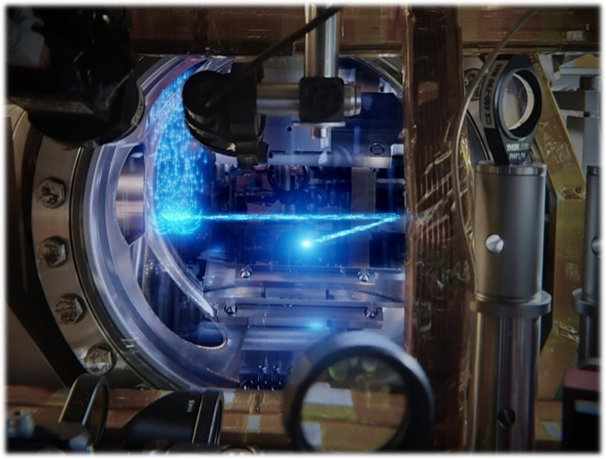

Research › Laser Cooling to Quantum Degeneracy
Laser Cooling to Quantum Degeneracy
The Challenge
Every Bose–Einstein condensate made since 1995 has been made the same way: trap a cloud, cool it, evaporate it, photograph it — then throw it away and start over. Quantum degeneracy has been a pulsed phenomenon. But lasers only became transformative when they ran continuous-wave; the same leap awaits matter waves.
The obstacle is that laser cooling normally stalls far above quantum degeneracy: photon scattering, density-dependent losses and the destructive final evaporation step all fight against keeping a condensate alive while it is continuously refilled.
The Atomic Marble Run
The answer, developed by our PIs during their PhDs in Florian Schreck’s group in Amsterdam, is architectural: unroll the BEC sequence in space instead of time. Atoms flow like marbles through a cascade of spatially separated stages — oven, slowing, broad-line cooling, narrow-line cooling, guided transport — each stage running continuously and in steady state.
On strontium’s 7.4 kHz intercombination line this chain reaches a steady-state phase-space density near unity — laser cooling alone, no evaporation — documented in An atomic marble run to unity phase-space density and 1000 times closer to a continuous atom laser.
In 2022 this architecture produced the world’s first continuous Bose–Einstein condensate — a condensate that lives indefinitely while new atoms stream in [Nature 606, 683 (2022)].

Now, With Ytterbium
In Taipei we are bringing this continuous architecture to ytterbium. Yb offers the same two-valence-electron toolbox — a broad 399 nm line for fast capture and a narrow 556 nm intercombination line for cold, dense samples — plus mHz clock transitions, rich isotopes (five bosons, two fermions), and metastable qubit states.
A continuous, near-degenerate ytterbium source is the engine at the heart of everything else we do: it feeds the CW optical clock and will load the light–matter interfaces that link atoms into quantum networks.